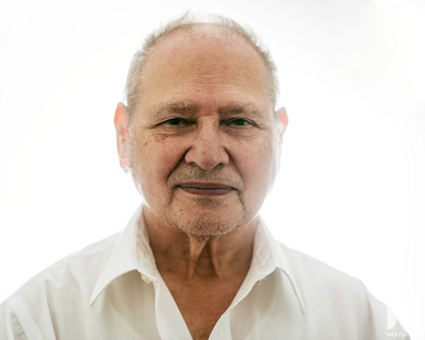

Founder
1955-2011

Biography
Paul Jobs (February 24, 1955 – October 5, 2011) was an American entrepreneur, industrial designer, business magnate, media proprietor, and investor. He was the co-founder, chairman, and CEO of Apple; the chairman and majority shareholder of Pixar; a member of The Walt Disney Company's board of directors following its acquisition of Pixar; and the founder, chairman, and CEO of NeXT. He is widely recognized as a pioneer of the personal computer revolution of the 1970s and 1980s, along with his early business partner and fellow Apple co-founder Steve Wozniak. Read more
Co-Founder
1950 - Present
.jpg)
Biography
Stephen Gary Wozniak (/ˈwɒzniæk/; born August 11, 1950), also known by his nickname "Woz", is an American technology entrepreneur, electrical engineer, computer scientist, computer programmer, philanthropist, and inventor. In 1976, he co-founded Apple Computer with his early business partner Steve Jobs. Through his work at Apple in the 1970s and 1980s, he is widely recognized as one of the most prominent pioneers of the personal computer revolution.Read more
Co-Founder
1934 - Present
Biography
Ronald Gerald Wayne (born May 17, 1934) is an American retired electronics industry business executive. He co-founded Apple Computer Company (now Apple Inc.) as a partnership with Steve Wozniak and Steve Jobs on April 1, 1976, providing administrative oversight and documentation for the new venture. Twelve days later, he sold his 10% share of the new company back to Jobs and Wozniak for US$800 (equivalent to $4,100 in 2022), and one year later accepted a final $1,500 (equivalent to $7,700 in 2022) to forfeit any potential future claims against the newly incorporated AppleRead more